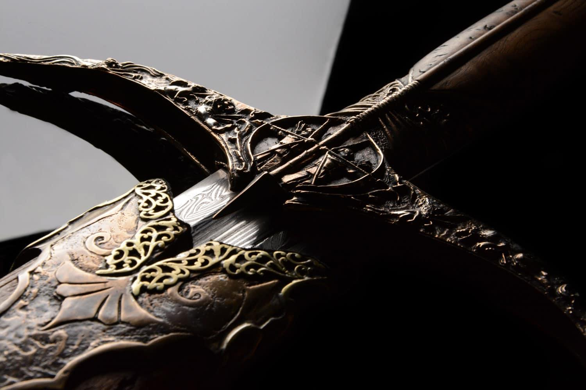

Secrets of the Seven Kingdoms
Dragons are among the most powerful creatures in Westeros. House Targaryen became famous for riding dragons into battle, using their incredible strength and fire to conquer enemies. Daenerys Targaryen's dragons — Drogon, Rhaegal, and Viserion — play a major role in the struggle for the Iron Throne.
The Iron Throne
The Iron Throne is the ultimate symbol of power in the Seven Kingdoms. According to the story, Aegon the Conqueror had it forged from the swords of his defeated enemies using dragonfire. Its sharp, uncomfortable design reflects a central idea of the series: ruling a kingdom is never easy.
The Great Houses of Westeros
Several noble houses compete for power, each with its own history, symbol, and motto. House Stark rules from the North and is associated with the direwolf. House Lannister is known for its wealth and golden lion, while House Targaryen is identified by its three-headed dragon. Their rivalries shape the fate of the kingdom.